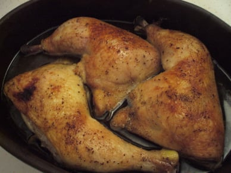

Apicius' Roman Chicken Recipe

Apicius' Roman Chicken is a classic Roman dish made with chicken cooked
in a sauce of wine, honey, vinegar, and spices, such as pepper and garum (a fermented fish sauce).
It was a popular dish during ancient Roman times and is still enjoyed today in modern variations.
Ingredients
- 1 whole chicken, cut into pieces
- 1 cup white wine
- 1 cup chicken broth
- 1 tsp ground black pepper
- 1 tsp ground cumin
- 1 tsp ground coriander
- 1 tsp garum (fish sauce)
- 1/2 cup chopped fresh parsley
Instructions
- In a large pot, heat olive oil over medium-high heat.
- Add chicken pieces and cook until browned on all sides.
- Add white wine and chicken broth and bring to a simmer.
- Add black pepper, cumin, coriander, and garum, stirring to combine.
- Cover the pot and simmer for 30-40 minutes, until the chicken is cooked through.
- Stir in the chopped parsley and serve.
Return to home